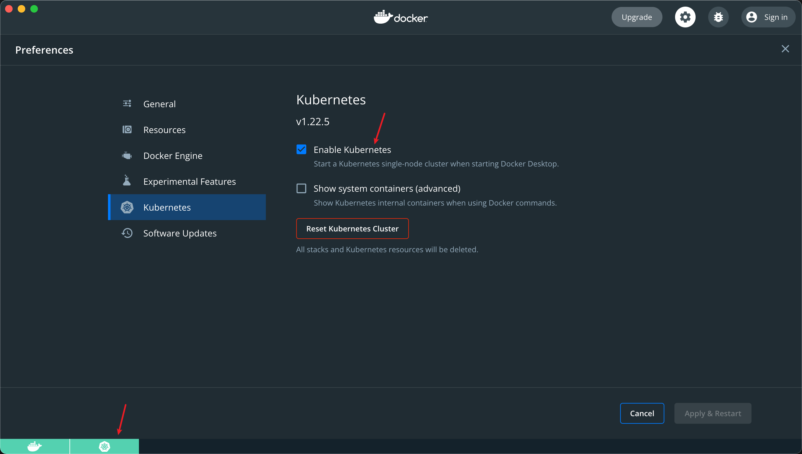
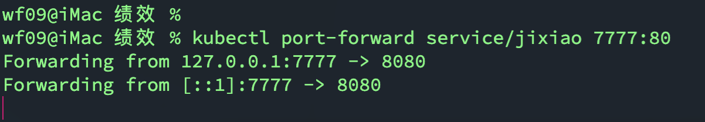
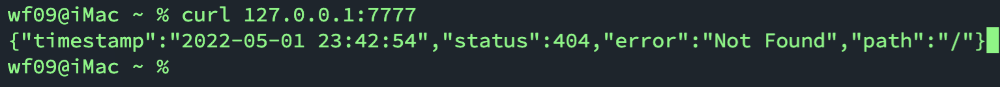

Kubernetes集群实践（三）集群外如何访问K8s内的Service
本文主要介绍集群外如何访问K8s内的Service。
关键词：k8s
准备工作
这里是使用的开启了k8s集群的Docker Desktop For Mac。在Windows/Mac上使用K8s in Docker请查看上一篇文章。

创建Developments
Deployment 是在 Pod 上层的一个抽象，它可以定义一组 Pod 的副本数目、以及这个 Pod 的版本。一般用 Deployment 这个抽象来做应用的真正的管理，而 Pod 是组成 Deployment 最小的单元。
Kubernetes 是通过 Controller，也就是我们刚才提到的控制器去维护 Deployment 中 Pod 的数目，它也会去帮助 Deployment 自动恢复失败的 Pod。
这里的给出一个Development的定义：
1 | apiVersion: apps/v1 |
TIPS：
- 这里使用的是本地镜像，因此
imagePullPolicy设置为Never - containerPort指的是Pod向外部暴露的端口
创建Service
Service 提供了一个或者多个 Pod 实例的稳定访问地址。
可以理解为Service 是 Pod和外部访问的桥梁。
通过Servide访问Pod应用有多种方式，这里给出通过Service 连接到Pod，并通过端口转发访问的方式。
这里创建一个Service：
1 | apiVersion: v1 |
TIPS：
这里通过
.spec.selector.app的Value访问刚刚部署的Developments，即对应的Value要完全相同才行，简单理解为app: jixiao要出现在两个配置文件中即可。targetPort指的是Pod暴露的端口，port指的是在Service中使用的端口。
集群外访问集群内Service的方式
端口转发
转发一个本地端口到Pod端口
1 | kubectl port-forward service/jixiao 7777:80 |
TIPS：
- 这里的80端口是Service中使用的端口，而不是Pod向外暴露的端口。

测试
新打开一个终端

externalIPs
如果外部的 IP 路由到集群中一个或多个 Node 上，Kubernetes Service 会被暴露给这些 externalIPs。 通过外部 IP（作为目的 IP 地址）进入到集群，打到 Service 的端口上的流量， 将会被路由到 Service 的 Endpoint 上。
1 | apiVersion: v1 |
TIPS：
如上配置可以通过192.168.15.202:8888访问到Service后面的Pods应用。
NodePort
NodePort 服务是引导外部流量到你的服务的最原始方式。NodePort，正如这个名字所示，在所有节点（虚拟机）上开放一个特定端口，任何发送到该端口的流量都被转发到对应服务。
然而，NodePort 默认范围是30000-32767。这个端口号太大，不适合对外提供服务。
1 | apiVersion: v1 |